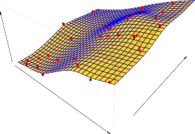

Prediction
예측
In many situations, a set of inputs X are readily available, but the output Y cannot be easily obtained.
다양한 상황에서 일련의 입력값 X 는 쉽게 구할 수 있지만, 출력값 Y 는 쉽게 얻을 수 없습니다.
In this setting, since the error term averages to zero, we can predict Y using
이러한 설정에서 오차 항의 평균은 0이 되므로, 우리는 다음 공식을 사용하여 Y 를 예측할 수 있습니다.
\[\hat{Y} = \hat{f}(X) \tag{2.2}\]where $\hat{f}$ represents our estimate for f , and $\hat{Y}$ represents the resulting prediction for Y .
여기서 $\hat{f}$ 는 f 에 대한 우리의 추정치를 나타내고, $\hat{Y}$ 은 Y 에 대한 결과 예측치를 나타냅니다.
In this setting, $\hat{f}$ is often treated as a black box , in the sense that one is not typically concerned with the exact form of $\hat{f}$ , provided that it yields accurate predictions for Y .
이러한 설정에서, $\hat{f}$ 가 Y 에 대해 정확한 예측을 제공하기만 한다면 일반적으로 $\hat{f}$ 의 정확한 형태에 대해서는 크게 신경 쓰지 않는다는 점에서 $\hat{f}$ 는 종종 내부를 알 수 없는 블랙박스(black box) 취급을 받습니다.
As an example, suppose that $X_1, . . . , X_p$ are characteristics of a patient’s blood sample that can be easily measured in a lab, and Y is a variable encoding the patient’s risk for a severe adverse reaction to a particular drug.
예를 들어, $X_1, . . . , X_p$ 가 실험실에서 쉽게 측정할 수 있는 환자 혈액 샘플의 특성이고, Y 가 특정 약물에 대한 환자의 심각한 부작용 위험을 인코딩하는 변수라고 가정해 봅시다.
It is natural to seek to predict Y using X , since we can then avoid giving the drug in question to patients who are at high risk of an adverse reaction—that is, patients for whom the estimate of Y is high.
그렇다면 부작용 위험이 높은 환자, 즉 예측치 Y 가 높은 환자에게 문제가 되는 약물을 투여하는 것을 피할 수 있으므로, X 를 사용하여 Y 를 예측하려고 시도하는 것은 자연스럽습니다.
The accuracy of $\hat{Y}$ as a prediction for Y depends on two quantities, which we will call the reducible error and the irreducible error .
Y 에 대한 예측으로서 $\hat{Y}$ 의 정확도는 두 가지 수량에 따라 달라지며, 우리는 이를 줄일 수 있는 오차(reducible error) 와 줄일 수 없는 오차(irreducible error) 라고 부를 것입니다.
In general, $\hat{f}$ will not be a perfect estimate for f , and this inaccuracy will introduce some error.
일반적으로 $\hat{f}$ 는 f 에 대한 완벽한 추정치가 되지 못하며, 이러한 부정확성은 약간의 오차를 유발합니다.
This error is reducible because we can potentially improve the accuracy of $\hat{f}$ by using the most appropriate statistical learning technique to estimate f .
우리는 f 를 추정하기 위해 가장 적절한 통계적 학습 기술을 사용하여 $\hat{f}$ 의 정확도를 잠재적으로 개선할 수 있으므로, 이 오차는 결과적으로 줄일 수 있습니다(reducible).
However, even if it were possible to form a perfect estimate for f , so that our estimated response took the form $\hat{Y} = f(X)$, our prediction would still have some error in it!
그러나 f 에 대한 완벽한 추정을 형성하여 추정된 응답이 $\hat{Y} = f(X)$ 의 형태를 취하는 것이 가능하다고 해도, 우리의 예측에는 여전히 약간의 오차가 있을 것입니다!
This is because Y is also a function of $\epsilon$ , which, by definition, cannot be predicted using X .
이것은 Y 또한 정의에 따라 X 를 사용하여 예측할 수 없는 미지의 요소인 $\epsilon$ 의 함수이기 때문입니다.
Therefore, variability associated with $\epsilon$ also affects the accuracy of our predictions.
따라서 $\epsilon$ 과 관련된 변동성 역시 우리의 예측 정확도에 직접적인 영향을 미칩니다.
This is known as the irreducible error, because no matter how well we estimate f , we cannot reduce the error introduced by $\epsilon$ .
우리가 아무리 f 를 잘 추정하더라도 $\epsilon$ 에 의해 도입된 오차는 줄일 수 없기 때문에 이것은 줄일 수 없는(irreducible) 오차로 널리 알려져 있습니다.
Why is the irreducible error larger than zero?
줄일 수 없는 오차는 왜 0보다 더 크게 남게 될까요?
The quantity $\epsilon$ may contain unmeasured variables that are useful in predicting Y : since we don’t measure them, f cannot use them for its prediction.
수량 $\epsilon$ 에는 Y 를 예측하는 데 유용할 수 있는 측정되지 않은 변수가 포함될 수 있습니다: 왜냐하면 우리가 이 변수들을 측정하지 않기 때문에, f 는 예측을 위해 이들을 사용할 수 없습니다.

FIGURE 2.3. The plot displays income as a function of years of education and seniority in the Income data set. The blue surface represents the true underlying relationship between income and years of education and seniority , which is known since the data are simulated. The red dots indicate the observed values of these quantities for 30 individuals.
그림 2.3. 플롯은 Income 데이터 세트에서 years of education(교육 연수) 과 seniority(근속 연수) 의 함수로서 만들어진 income(수입) 을 직접 표시합니다. 파란색 표면은 이 특수한 경우, 제공된 데이터가 시뮬레이션되었기 때문에 이미 원형 구조가 잘 파악되어 알려진 현상인 income 과 years of education 및 seniority 사이의 실제 기초적인 내면 형태적 함수 관계를 나타냅니다. 이 공간상 산발적인 빨간색 각각의 불규칙한 원형 점 무리들은 이 측정 결과 산물 수량들에 대한 구체적 30명의 실험 개인 개인마다 측정된 관찰된 현황 값들을 정확하게 나타냅니다.
The quantity $\epsilon$ may also contain unmeasurable variation.
수량 $\epsilon$ 에는 아예 측정할 수 없는 변동이 포함될 수도 있습니다.
For example, the risk of an adverse reaction might vary for a given patient on a given day, depending on manufacturing variation in the drug itself or the patient’s general feeling of well-being on that day.
예를 들어, 특정 약물 복용 시 부작용 발생 상황 위험은 해당 약물 자체 생산 공정상의 미세한 제조 편차나 심지어 그날그날 측정 당일 환자가 느끼는 일반적인 웰빙 및 심리 건강 상태 감각 기분에 따라 같은 특정 환자라도 측정 날에 따라 달라질 수 있습니다.
Consider a given estimate $\hat{f}$ and a set of predictors X , which yields the prediction $\hat{Y} = \hat{f}(X)$.
어떤 결정된 추정치 $\hat{f}$ 와 예측 $\hat{Y} = \hat{f}(X)$ 를 산출하는 예측 변수 세트 X 를 고려해 봅시다.
Assume for a moment that both $\hat{f}$ and X are fixed, so that the only variability comes from $\epsilon$ .
잠시 동안 $\hat{f}$ 와 X 가 모두 고정되어 유일한 변동성이 오로지 $\epsilon$ 에서 파생되어 온다고 가정해 봅시다.
Then, it is easy to show that
그렇다면, 다음 수식을 증명하여 보여주는 것은 쉽습니다.
\[\begin{align*} E(Y - \hat{Y})^2 &= E[f(X) + \epsilon - \hat{f}(X)]^2 \\ &= [f(X) - \hat{f}(X)]^2 + \text{Var}(\epsilon) \end{align*} \tag{2.3}\]where $E(Y - \hat{Y})^2$ represents the average, or expected value , of the squared difference between the predicted and actual value of Y , and $\text{Var}(\epsilon)$ represents the variance associated with the error term $\epsilon$ .
여기서 $E(Y - \hat{Y})^2$ 은 예측된 Y 의 예측값과 실제값 사이의 제곱차의 평균, 또는 기댓값(expected value) 을 나타내며, $\text{Var}(\epsilon)$ 은 오차 항 $\epsilon$ 과 관련된 분산(variance) 을 지칭합니다.
The focus of this book is on techniques for estimating f with the aim of minimizing the reducible error.
이 책의 초점은 줄일 수 있는 오차를 최소화하는 것을 핵심 목표로 하여 f 를 추정하는 데 적절한 유용한 다양한 기술에 맞춰져 있습니다.
It is important to keep in mind that the irreducible error will always provide an upper bound on the accuracy of our prediction for Y .
절대 간과하지 말아야 할 점은, 피할 수 없는 줄일 수 없는 태생 오차가 항상 우리가 Y 를 향해 쏟는 예측 정확도에 있어 상한선(upper bound)이라는 넘을 수 없는 예측 장벽 한계를 제공한다는 것을 명심하는 것입니다.
This bound is almost always unknown in practice.
현실 측정 관행에서 이 한계치 장벽은 거의 항상 미지의 요소로 남아 있습니다.
Inference
추론
We are often interested in understanding the association between Y and $X_1, . . . , X_p$ .
우리는 종종 Y 와 예측 요소인 $X_1, . . . , X_p$ 사이의 얽힌 구조적 연관성을 이해하는 데 깊은 관심을 갖습니다.
In this situation we wish to estimate f , but our goal is not necessarily to make predictions for Y .
이러한 상황에서도 우리는 여전히 f 를 추정하고자 하지만, 이 행위의 목표가 반드시 Y 에 대한 직접적인 도출 예측을 생산적으로 해내는 것은 아닙니다.
Now $\hat{f}$ cannot be treated as a black box, because we need to know its exact form.
이제 $\hat{f}$ 는 그저 결과만 내놓는 블랙박스로 취급될 수 없는데, 왜냐하면 우리는 그것이 지닌 내부적인 정확한 형태의 이면 체계를 샅샅이 알아야 하기 때문입니다.
In this setting, one may be interested in answering the following questions:
이러한 분석 설정에서 사람들은 다음과 같은 날카로운 질문들에 대한 해답을 정교하게 찾는 데 상당한 흥미를 가질 수 있습니다:
-
Which predictors are associated with the response? It is often the case that only a small fraction of the available predictors are substantially associated with Y . Identifying the few important predictors among a large set of possible variables can be extremely useful, depending on the application.
-
어느 예측 변수가 측정 응답과 연관되어 있는가? 대부분의 경우, 사용 가능한 숱하게 많은 전체 예측 변수 중 극히 일부 소수 변수만이 실제 목표 Y 와 실질적으로 강력하게 연관되어 있습니다. 어쩌면 무수하게 방대하게 커다란 가능한 변수들 세트 무더기 속에서 꽤 두드러지게 작용하는 소수의 중요한(important) 중대 예측 변수를 식별해내는 것은, 향후 응용 및 적용 분야 상황에 따라 매우 엄청난 수준으로 유용하게 쓰일 수 있습니다.
-
What is the relationship between the response and each predictor? Some predictors may have a positive relationship with Y , in the sense that larger values of the predictor are associated with larger values of Y . Other predictors may have the opposite relationship. Depending on the complexity of f , the relationship between the response and a given predictor may also depend on the values of the other predictors.
-
실제 응답과 각 인과 예측 변수 사이의 관계는 어떠한가? 일부 특정 예측 변수는 예측 변수의 값이 클수록 Y 의 값도 동반하여 커진다는 의미에서 Y 와 긍정적인, 즉 양(positive)의 상호 비례적 관계를 가질 수 있습니다. 이와 반대로 다른 예측 변수는 완전히 대척인 정반대의 역방향 관계를 기저에 가질 수도 있습니다. 심지어 f 가 지닌 내면 방정식 상의 복잡성 여부 측면에 의존하여, 응답과 특정 예측 변수 간의 관계는 엮여진 다른 예측 변수의 값에 따라 또다시 크게 덩달아 좌우될 수도 있습니다.
-
Can the relationship between Y and each predictor be adequately summarized using a linear equation, or is the relationship more complicated? Historically, most methods for estimating f have taken a linear form. In some situations, such an assumption is reasonable or even desirable. But often the true relationship is more complicated, in which case a linear model may not provide an accurate representation of the relationship between the input and output variables.
-
Y 와 각 인과 예측 변수 간의 관계를 선형 방정식을 사용하여 적절하게 충분히 요약할 수 있는가, 아니면 그 관계 역학이 훨씬 더 심오하고 복잡한가? 역사적으로 살펴보면 f 를 파악해 추정하는 거의 대부분의 기법과 방법들은 아주 단순화된 선형적인 형태(linear form)를 주로 취해 왔습니다. 일부 다수 상황에서는 이러한 선형적 기저 가정이 심히 합리적이거나 심지어 바람직하기까지 합니다. 하지만 현실의 세계에서 마주하는 진정한 관계는 선형보다 너무나 복잡하게 꼬여 있는 패턴일 때가 자주 있으며, 이러한 난해한 경우의 선형 모델은 도무지 입력 변수와 출력 변수 사이의 실제 관계를 담은 단초에 대한 정확하고 정교한 표현을 온전히 제공하지 못할 수 있습니다.
In this book, we will see a number of examples that fall into the prediction setting, the inference setting, or a combination of the two.
앞으로 이 책 전체에 이르러서, 우리는 이전에 언급한 정통 예측 설정이나 원인 파악의 추론 설정, 또는 그 두 가지 속성이 모두 혼합된 형태의 복합 설정의 환경 상황들에 속하는 아주 수다한 다수의 풍부한 사례들을 직접 접하고 살펴보게 될 것입니다.
For instance, consider a company that is interested in conducting a direct-marketing campaign.
하나의 극명히 드러난 예시로서, 어느 특정 타겟 대상의 다이렉트 콜 마케팅 캠페인 시도를 진행하는 것에 지대한 관심이 쏠려 목표를 둔 회사를 고려해 봅시다.
The goal is to identify individuals who are likely to respond positively to a mailing, based on observations of demographic variables measured on each individual.
궁극적인 목표는 각 개인 표본 고객들에게서 직접 측정한 인구 통계학적 변수의 관찰 기반 요소를 바탕으로 하여 자사의 메일링 판촉에 호의적으로 긍정적인 응답을 보일 확률이 다분히 높은 대상을 골라 식별하는 것입니다.
In this case, the demographic variables serve as predictors, and response to the marketing campaign (either positive or negative) serves as the outcome.
이러한 경우 인구 통계학적 조사 변수는 예측 변수(predictors)의 역할을 착실히 수행하며, 행해진 마케팅 캠페인에 대한 반응(긍정적이든 부정적이든 무관하게)은 성과 결과치인 출력 역할(outcome)로 사용됩니다.
The company is not interested in obtaining a deep understanding of the relationships between each individual predictor and the response; instead, the company simply wants to accurately predict the response using the predictors.
이 상황에서 회사는 결코 각 개인의 인구 예측 변수와 캠페인 응답 반응 사이의 깊고도 철학적인 함수 관계 구조를 학술적으로 깊이 이해하는 데에는 전혀 아무런 관심도 두지 않습니다; 그 대신 기업은 경제적 창출을 목적으로 단순하게 수립된 인구 예측 변수를 오로지 사용하여 최종 목적 응답률을 가장 정확하게 높은 스코어로 예측해 내기만을 노골적으로 원합니다.
This is an example of modeling for prediction.
이것이 통계 모형을 ‘예측(prediction)’ 만을 주축으로 삼아 모델링 하는 가장 대표적이고 직관적인 이해의 사례입니다.
In contrast, consider the Advertising data illustrated in Figure 2.1. One may be interested in answering questions such as:
반대로 대조하여 이전 그림 2.1에 서술된 Advertising 예측 데이터 상황 형국을 비교 고려해 봅시다. 연구자는 다음과 같은 질문에 해답을 구하는 데 큰 관심을 보일 수 있습니다:
-
Which media are associated with sales?
-
어느 미디어 플랫폼이 제품 판매와 가장 크게 연관되어 있나?
-
Which media generate the biggest boost in sales? or
-
어느 미디어가 매출 증가에 가장 강력한 큰 영향을 창출하나? 또는
-
How large of an increase in sales is associated with a given increase in TV advertising?
-
할당된 TV 캠페인 광고 폭이 일정량 주어지면, 그에 상응하여 판매 매출에 도대체 어느 다량의 상당한 큰 규모 증가와 연관이 이루어지나?
This situation falls into the inference paradigm.
이러한 상황 설정은 명백히 ‘추론(inference)’ 의 패러다임 설정 범주에 정확하게 분류되어 떨어집니다.
Another example involves modeling the brand of a product that a customer might purchase based on variables such as price, store location, discount levels, competition price, and so forth.
또 다른 추론 사례는 타겟 고객이 가격, 오프라인 매장 위치, 진행 할인 수준, 경쟁사 제품 가격 추이 등과 같은 다양한 주변 변수 요인을 기반으로 고려하여 향후 구매할 가능성이 높은 어떤 자사 제품 브랜드를 역학 조사해 직접 모델링하는 경우를 포함합니다.
In this situation one might really be most interested in the association between each variable and the probability of purchase.
이러한 인과 관계 환경 형국에서 조사자는 각 변수와 상품 구매 확률 사이의 얽힌 구조적 연관성을 파악하는 것에 진정 가장 심도 있는 관심을 가질 수 있습니다.
For instance, to what extent is the product’s price associated with sales? This is an example of modeling for inference.
단적으로 묻자면, 이 상품 가격 요소는 회사 판촉 매출 결과와 도대체 어느 범위의 수준 정도까지 연관되어 있는가? 와 같은 부류입니다. 이것이 바로 원인 규명이 중심이 된 ‘추론(inference)’ 을 위한 모델링 구조의 전형적인 대표 형태 예시입니다.
Finally, some modeling could be conducted both for prediction and inference.
마지막으로, 일부 고등의 과정에서는 모델링 훈련이 예측(prediction)과 추론(inference) 두 가지를 함께 겨냥하여 동시에 복합적으로 수행될 수도 있습니다.
For example, in a real estate setting, one may seek to relate values of homes to inputs such as crime rate, zoning, distance from a river, air quality, schools, income level of community, size of houses, and so forth.
예를 들어, 지역 부동산 산업 설정에 있어, 우리는 시판 주택 자산의 본질적 가치를 주변 범죄 발생률, 용도 구분 구역, 근방 강물로부터의 도보 이동 거리, 대기 공기 품질 지수, 주변 명문 학교 수준 유무, 소속 지역 거주 사회 평균 소득 수준, 직접적인 주택 평수 크기 등과 같은 다양한 형태의 무수한 기여 입력 변수 등과 깊게 구조적으로 연관 지으려고 꾸준히 탐색할 수 있습니다.
In this case one might be interested in the association between each individual input variable and housing price—for instance, how much extra will a house be worth if it has a view of the river? This is an inference problem.
이러한 다양한 경우 우리는 개별적인 투입 입력 요인 변수 하나하나와 실 주택 거래 가격 사이의 강한 연관성에 다분히 관심을 가질 수 있습니다—예를 들면, 창문 밖으로 넓게 뻗은 아름다운 강물 배경 전망을 온전히 갖추고 있다면 과연 그 주택 부동산은 프리미엄으로 얼마나 많은 추가적인 금전적 가치를 가지게 될 것인가? 이러한 해답을 파악코자 하는 속성은 원인 규명을 향한 추론 과제입니다.
Alternatively, one may simply be interested in predicting the value of a home given its characteristics: is this house under- or over-valued? This is a prediction problem.
그 외의 대안으로, 만일 다른 이들은 그 특성이 지시된 주변 주택의 절대 수량적 가치를 그저 단순히 예측해 내는 것에만 관심을 고정시킬 수도 있습니다: 현재 거래 매물인 이 주택이 적정 가치에서 지나치게 낮게 평가되었는가(under-valued) 혹은 터무니없이 과도하게 평가(over-valued)되었는가? 이런 평가만을 거두는 것은 오직 값만 산출해 확인하는 예측형 모델 과제입니다.
Depending on whether our ultimate goal is prediction, inference, or a combination of the two, different methods for estimating f may be appropriate.
우리의 통계 과정의 궁극적인 지향 목표 지점이 예측이냐, 혹은 원인 규명 추론이냐, 아니면 이 둘 복합적인 조합인지의 여부에 크게 의존하여, 베일에 싸인 함수 f 를 추정해 구현하는 가장 강력히 적절한 방법은 완전히 달라질 수 있습니다.
For example, linear models allow for relatively simple and interpretable inference, but may not yield as accurate predictions as some other approaches.
예를 들어, 대중적인 선형 모델(linear models) 형태 요소는 원인 파악과 시각화 구조 이해를 돕는 데 있어, 구조 자체가 꽤나 상대적으로 다루기 단순하고 원인 결론 부분의 해석 및 시각화가 다소 매우 용이한 직관적인 간편 추론 기법을 허용하지만, 정작 값 자체의 정확한 예측 도달 능력에 이르러서는 일부 다른 훨씬 고난도의 다른 정교한 최신식의 방법 접근법들 만큼 매우 높고 타당히 강력한 정밀 정확도를 자랑하는 뛰어난 수준의 예측 수치를 결코 전혀 완벽하게 산출해 내지 못할 수도 있습니다.
In contrast, some of the highly non-linear approaches that we discuss in the later chapters of this book can potentially provide quite accurate predictions for Y , but this comes at the expense of a less interpretable model for which inference is more challenging.
대조적으로, 미래에 진입할 이 책의 후반 단원 장부에서 우리가 심도 있게 논의하게 될 극도로 복잡한 수준의 수준 높은 비선형적 접근법 방식들 중 일부 기법들은, 훈련을 통해 잠재적으로 결과 요소 Y 예측의 오차 한계를 파괴해 비교도 되지 않을 정도로 엄청난 수치의 꽤 정밀하고 상당히 매우 정확한 예측력을 제공할 수 있습니다, 그러나 이렇게 높아진 성능의 이점도 결과적으로는 그 함수 모형 예측 체계의 형태가 심하게 일그러지고 비틀려 고도로 압축 꼬여버린 비선형의 모호한 블랙박스 방정식 양상을 띠고 있기 때문에 내부 모형 분석 규명에 있어서만큼은 원인 구조 추론 논거 시도 자체가 너무나 상대적으로 해석이 불가능하고 매우 까다롭고 심장하게 도전적인 고도의 해석 훈련조차 통하지 않을 치명적인 어려운 고난 모델 구조 형성이란 또 다른 희생 비용(expense)을 값비싸게 치르게 됩니다.